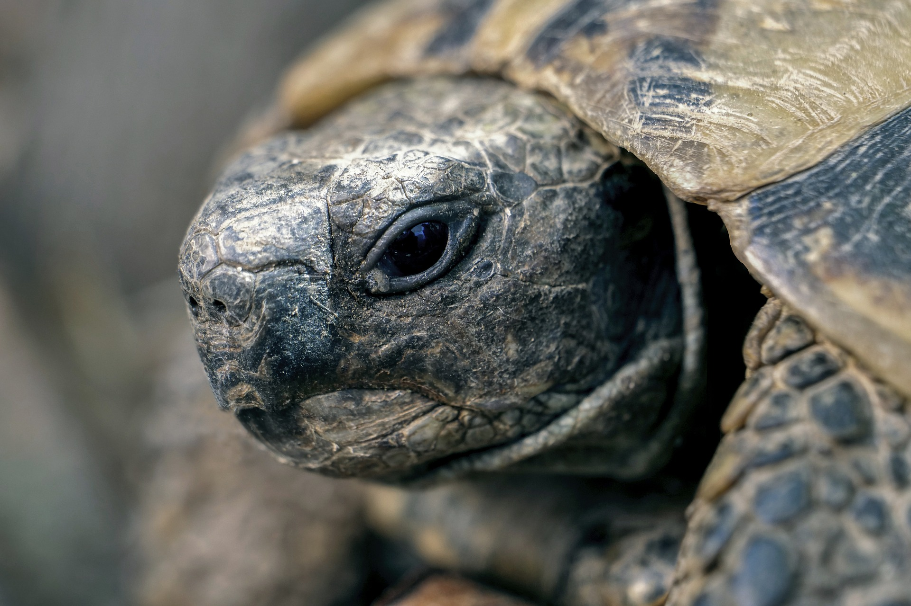
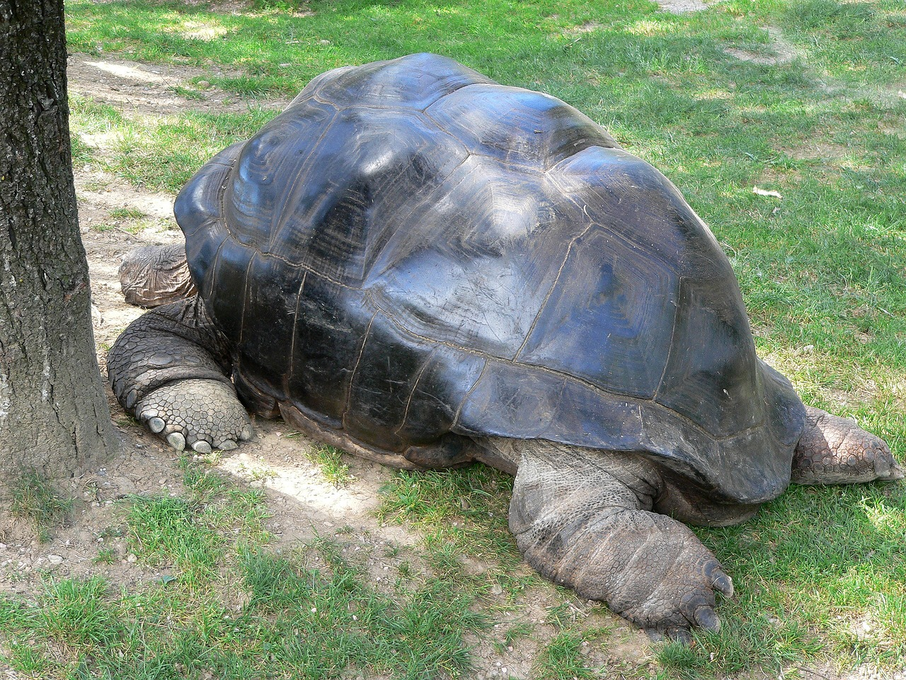

HOLA AMIGOS, QUE TAL ESTAN? ESPERO QUE MUY BIEN.
HOY AMANECE UN NUEVO DIA EN EL MUNDO DE LAS TORTUGAS ACUATICAS, TANTO LAS MARINAS COMO LAS DE AGUA DULCE.
ESTO VA PARA TODO LOS TORTUFOS: ME GUSTAN LAS PERROCHAS Y A TI TAMBIEN
Caretta caretta, Trachemys scripta, Dermochelys coriacea, Chelonoidis nigra
Tortugas:
Acuaticas
click here
Marinas
click here
National geografic
click here
 
TERRESTRES
GALAPAGOS
desiertos y climas secos
islas y archipielagos
patas y cuello cortos adaptados al clima
patas y cuello largos adaptados al clima
grandes
menos grandes, depende de cada especie
PAGINAS RELACIONADAS:
tortugas marinas
click here
tortugas en general
click here